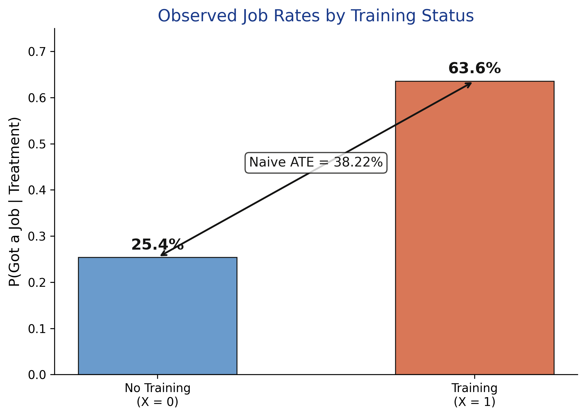
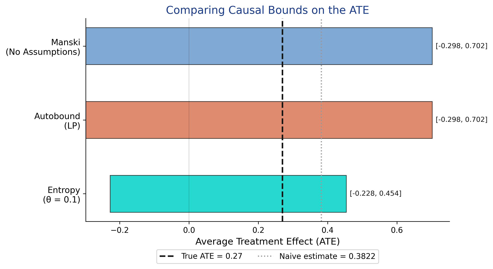
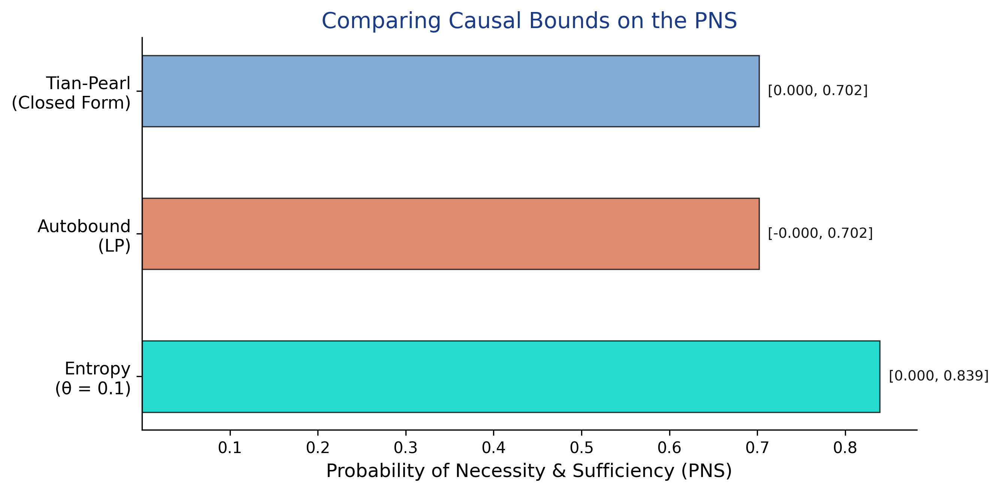
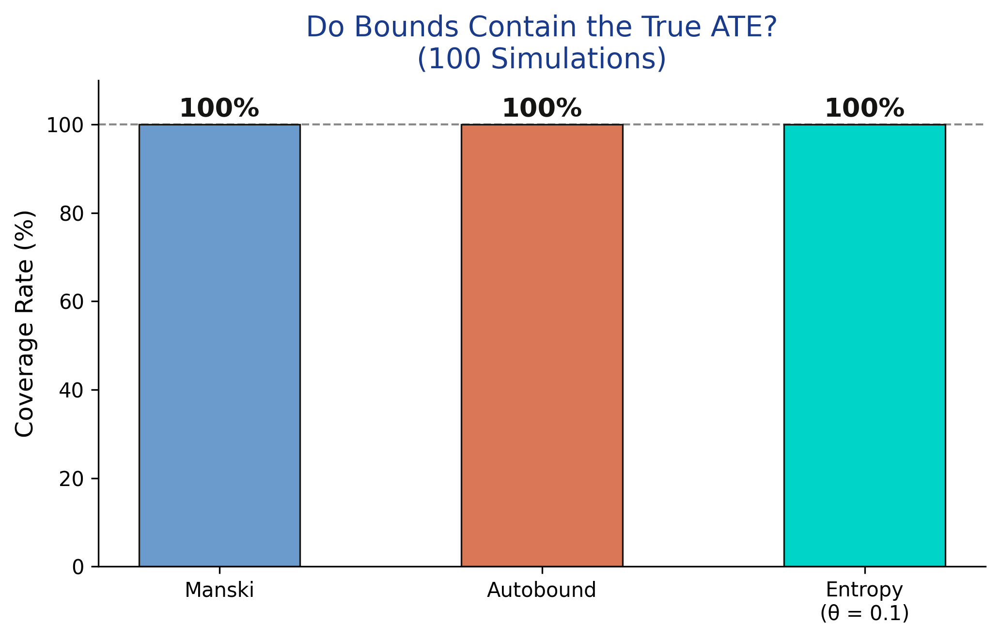
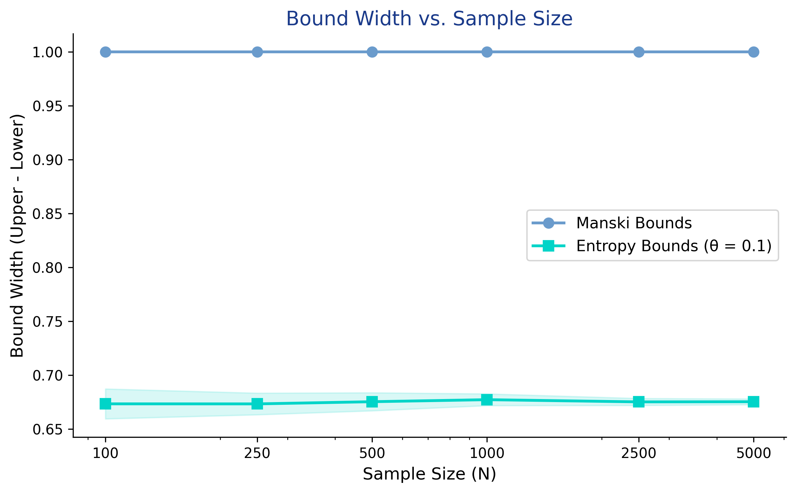

Bounding a causal effect when a confounder is unmeasured
Nagoya University (GSID)
June 11, 2026
Act I
A simulated study of 1,000 workers: 63.6% of the trained found jobs, only 25.4% of the untrained did.
But prior work experience — unmeasured — pushes the same people into training and into jobs. Which part of that gap is the program?
+0.1122
bias of the naive difference in means (0.3822) vs the true ATE (0.27)
Point identification: if \(x+y=10\) and \(y=6\), then \(x=4\) — exactly.
Partial identification: if you only know \(y\in[4,7]\), then \(x\in[3,6]\). You did not pin \(x\) down, but you ruled values out.
Credible uncertainty over incredible certainty.
Act II
The backdoor criterion needs \(U\); since \(U\) is unmeasured, every point estimate is biased by an unknown amount.

Observed job rates: 25.4% untrained vs 63.6% trained — a raw 38-point gap that mixes effect and selection.
\[E[Y(1)] = E[Y\mid X{=}1]\,P(X{=}1) + E[Y(1)\mid X{=}0]\,P(X{=}0)\]
We observe the first term; the counterfactual \(E[Y(1)\mid X{=}0]\) is unknown but, for a binary \(Y\), lies in \([0,1]\). Plug in the worst and best cases.
No parametric model, no exclusion restriction — only “the unseen counterfactual is a probability.”
CausalBoundingEngine matches the hand computation exactly — and in under a millisecond.
[−0.30, 0.70]
Manski ATE bounds · width exactly 1.0 · the true ATE (0.27) sits inside
| Method | Lower | Upper | Width |
|---|---|---|---|
| Manski (no assumptions) | −0.2980 | 0.7020 | 1.0000 |
| Autobound (LP) | −0.2980 | 0.7020 | 1.0000 |
Autobound solves an optimization and lands on the same interval — the worst-case distributions are genuinely valid.
\[H(U \mid X, Y) \leq \theta\]
Bound how surprising the hidden confounder may be. At \(\theta = 0.1\) the ATE tightens to \([-0.2279,\ 0.4540]\) — width 0.6819.
Entropy is a middle ground: more than “nothing” (Manski), less than “no confounders” (DoubleML).

Manski and autobound coincide at width 1.0; entropy (θ=0.1) is 32% narrower; the naive estimate sits to the right of the true ATE.
\[\text{PNS} = P\big(Y_{X=1}=1 \,\cap\, Y_{X=0}=0\big)\]
PNS is the share of workers who would get a job if trained and would not if untrained — individual-level causation, not a population average.
Tian–Pearl bounds: PNS \(\in [0.000,\ 0.702]\).

Tian–Pearl and autobound coincide at \([0.000,\ 0.702]\); entropy (θ=0.1) is wider at \([0.000,\ 0.839]\).
Act III

Coverage = 100% for Manski, autobound, and entropy across 100 resimulations — the bounds are valid, even when wide.

Manski width is pinned at 1.0 from N=100 to N=5,000; entropy hovers near 0.68 — only the scatter shrinks.
Objection. If the interval includes zero, you cannot even sign the effect — so why bother?
Response. They still rule out the impossible: the ATE cannot exceed 0.702, so any “75-point benefit” claim is refuted. And the honesty is the point — the alternative is a precise number that is precisely wrong.
BinaryIV)The identified set narrows only when you bring new information to bear.